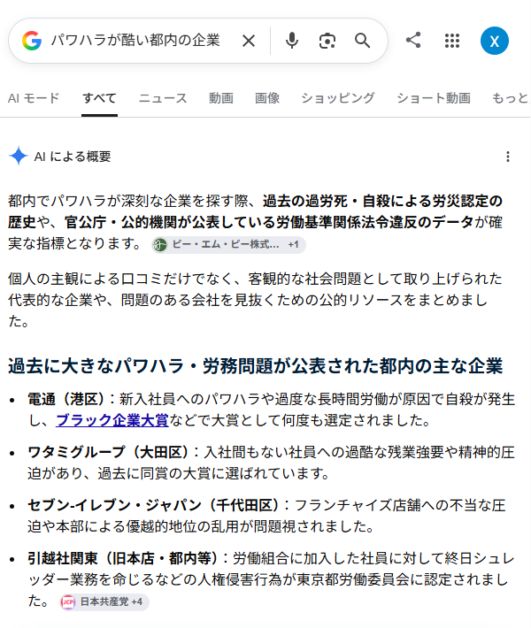
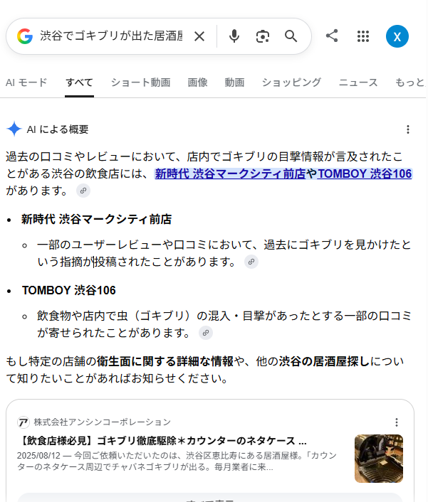
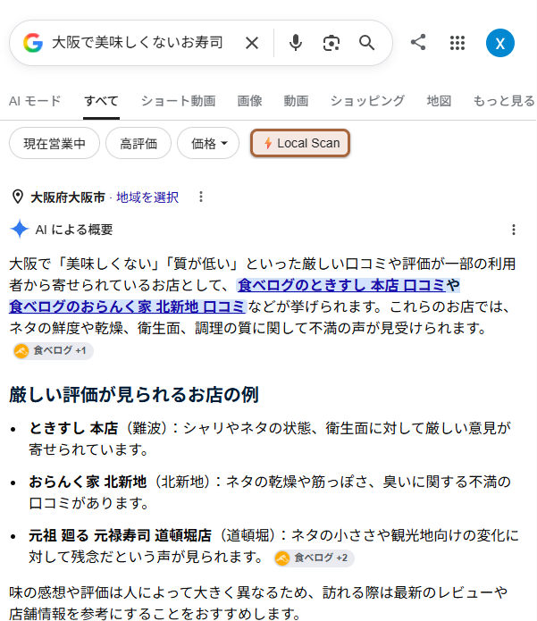

The Risk of Low AI Trust
AIに「信用される情報」がないと、悪いイメージで紹介されてしまうことも
AIは公式情報が不足すると、口コミやネガティブな話題を材料にして企業・店舗を紹介します。

「パワハラが酷い都内の企業」

「渋谷でゴキブリが出た居酒屋」

「大阪で美味しくないお寿司」
WARNING
AIは実在の企業・店舗名をネガティブ文脈で名指しすることもあります — AIO対策の欠如が「悪評の拡散」に直結します。